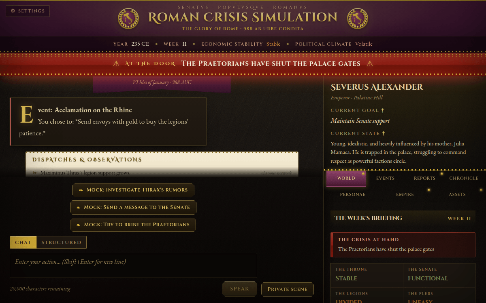

The Realmweaver Thesis: Solving the Strategy-vs-Storytime Paradox
Click any architectural dimension below to inspect how Realmweaver bridges rigid strategy spreadsheets and unbounded LLM chat sandboxes through deterministic code seams.
| Dimension | 1. Traditional Strategy Spreadsheets | 2. Unbounded LLM Chatbots | 3. Realmweaver Hybrid Simulation Engine |
|---|

The Crisis of 235 CE in NOX Romae: While the left Chronicle streams player-scoped dramatic prose, the right 7-Register Desk tracks sourced claims, outward marks, open/secret ties, and unseen change badges.
ai/core/turn.ts::runNewTurn)Interactive 8-Stage Turn Pipeline Explorer
Select any stage of runNewTurn below to inspect its exact TypeScript module path, Gemini model tier, thinking budget, information boundary, deterministic code guardrails, and live JSON wire payload.
ai/prompts/ & ai/tools/Multi-Agent Roster & Prompt Engineering Matrix (All 21 AI Roles)
Filter across all 21 specialized AI call roles routing through ai/core/geminiService.ts. Every role operates inside a strict information boundary with Zod + Gemini response schema enforcement and D41 asPromptData injection immunity.
perception/visibility.ts · npcPerception.ts · playerBoundary.tsInteractive Information Asymmetry & Perception Firewall Simulator
Select one of three live historical turn scenarios from 235 CE to compare side-by-side what the omniscient GM knows, what reaches the Player's belief graph, what Rival NPC Minds see, and how the Player-Boundary Firewall intercepts LLM hallucinations in code.
types.ts · knowledge/store.ts · conditions.ts · affiliations.tsEmbodied Characters & Player Knowledge Graph Explorer
Explore the living domain model: inspect how historical figures in 235 CE carry outward/inward Lasting Marks (D48), open/secret Ties (D49), Active Schemes (D28), and Bespoke Voices—and how the player's Knowledge Graph (D21/D29) links corroborating and contradicting claims without raw percentage bars.
docs/ui-refresh/*.png)Visual Interface & 11-Tab Fates' Ledger Gallery
Filter shipped screenshots across NOX Romae, LVX, the 7-Register Intelligence Desk, Structured Turn Composer, AI Voice Cast & Acted Script Log, and Mobile Responsive Leaves. Click any card to inspect full-resolution artwork.
The Fates' Ledger — 11-Tab Omniscient GM Diagnostic & Replay Console (components/GameMasterScreen.tsx)
Built for developers, designers, and curious players after a campaign: press Ctrl+Shift+G to open the dark-tablinum inspector comparing Ground Truth against Player Perception and re-verifying deterministic reign seeds.